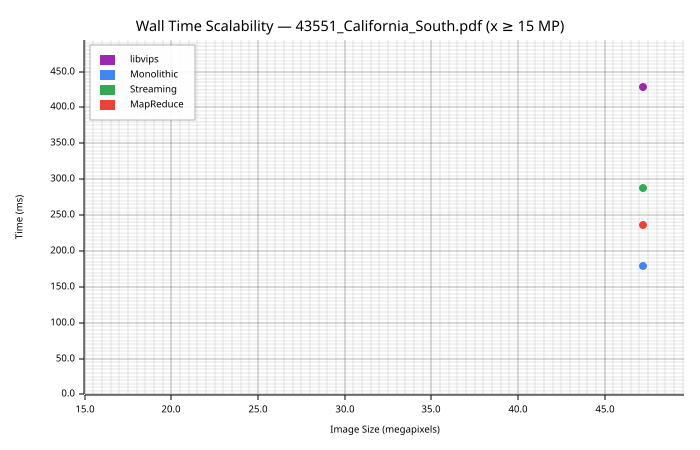
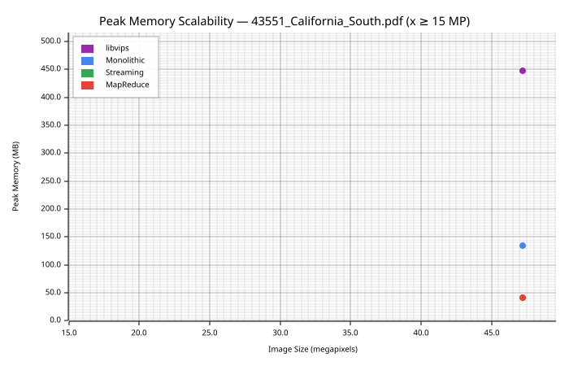
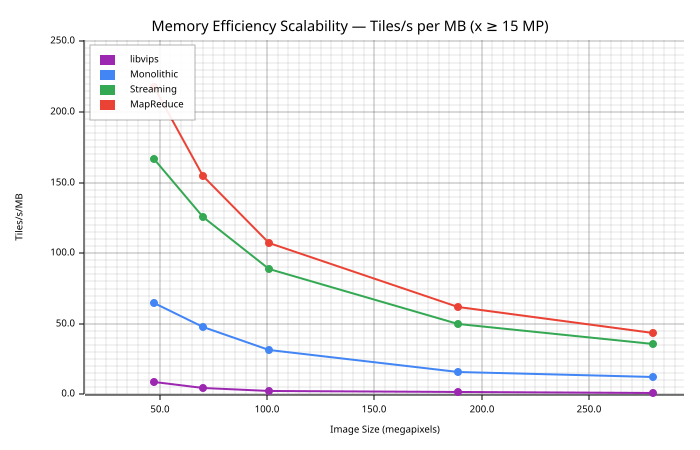
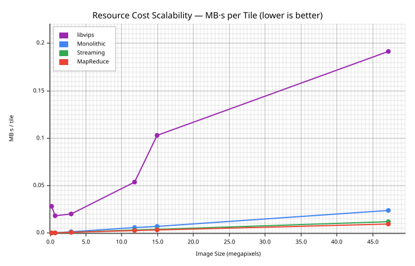
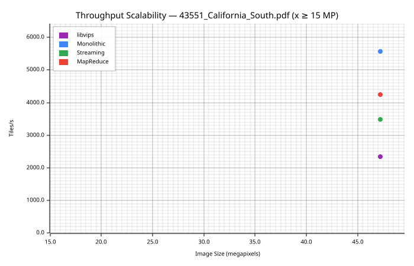

A pure-Rust image pyramiding library is outperforming the C heavyweight it was designed to replace. In head-to-head benchmarks on a 47-megapixel raster — the kind of image AEC firms tile every day from scanned blueprint PDFs — libviprs generates tiles 1.8× to 2.4× faster than libvips while using up to 10.7× less memory. Those aren't typos. And this isn't a rigged comparison: both libraries receive the same raw pixel buffer in process memory, both produce DeepZoom tile pyramids with identical parameters, and both are measured with the same clock. The difference is architectural.
How We Tested
Fair benchmarking between libraries written in different languages is notoriously difficult. Shell out to a CLI and you're measuring process spawn time. Write to disk and you're measuring your SSD. To eliminate every variable except the tiling pipeline itself, we linked both libraries into the same Rust process using libvips-rs FFI bindings to call vips_image_new_from_memory and vips_dzsave directly. Both libraries start from an identical RGB8 pixel buffer already resident in memory. libvips writes raw tiles to a tmpdir (the minimum dzsave allows); libviprs writes to a MemorySink (in-memory collection). Neither side encodes to PNG or JPEG — this is pure pyramid generation throughput.
We tested six image sizes from 0.2 megapixels (512×360) to 47 megapixels (8192×5760), using the aspect ratio of a real construction blueprint PDF (43551_California_South.pdf, 4608×3240 pts). Tile size was 256×256 with no overlap — standard DeepZoom configuration. libviprs was tested across all three of its engine modes: monolithic, sequential streaming, and parallel MapReduce.
The Numbers

Wall time vs. image size. Lower is better. libviprs engines (blue, green, red) stay below libvips (purple) at every size.
At the largest test size (8192×5760, 47 megapixels), libvips completes in 429 ms. The libviprs monolithic engine finishes in 180 ms — 2.4× faster. The streaming engine takes 287 ms while staying within a 4 MB memory budget, and the MapReduce engine splits the difference at 236 ms. Every libviprs engine beats libvips on wall time at every image size tested.
| Engine | Time | Peak Memory | Tiles/s | Tiles/s/MB | MB·s/tile |
|---|---|---|---|---|---|
| libvips 8.18 | 429 ms | 448 MB | 2,336 | 5.2 | 0.192 |
| libviprs monolithic | 180 ms | 135 MB | 5,572 | 41.3 | 0.024 |
| libviprs streaming | 287 ms | 42 MB | 3,487 | 83.0 | 0.012 |
| libviprs MapReduce | 236 ms | 42 MB | 4,242 | 101.0 | 0.010 |
Raw throughput only tells part of the story. Tiles-per-second makes the monolithic engine look dominant, but it burns 135 MB to get there. When you normalise for memory — tiles per second per megabyte of peak usage — the streaming and MapReduce engines pull decisively ahead. This matters in the real world: containers have memory limits, and an engine that generates fewer tiles per second but does it within a 42 MB envelope can run in places a 448 MB process cannot.
The Memory Wall

Peak memory vs. image size. libvips RSS grows steeply; libviprs streaming/MapReduce stay flat.
This is where the architectural difference hits hardest. libvips, despite its famous demand-driven lazy pipeline, reports 448 MB of resident memory at 47 megapixels. That number isn't a bug — it's the cost of libvips's internal buffer pool, decoded source cache, and operation graph overhead. The C library trades memory for generality: its pipeline can compose arbitrary sequences of operations (shrink, embed, rotate, colour-convert) and evaluates them lazily per-region, but the bookkeeping for that generality has a floor that doesn't go to zero.
libviprs takes a different bet. Its monolithic engine is simple: materialise the full canvas, downscale level-by-level, extract tiles. Peak memory is canvas_bytes + canvas_bytes/4 — the source plus one downscaled level. At 47 MP that's 135 MB, already 3.3× less than libvips. But the streaming engine goes further: it processes the image in horizontal strips, holding only the current strip plus an accumulator chain that halves at each pyramid level. Peak memory drops to 42 MB and stays there regardless of image height. The MapReduce engine uses the same strip model but renders multiple strips concurrently for throughput.
Memory scaling at 256× image area increase (0.2 MP → 47 MP):
libvips: 2.7× — near-constant RSS due to lazy evaluation, but starts high
libviprs monolithic: 256× — linear with image area (O(width × height))
libviprs streaming: 79.6× — linear with width only (O(width × strip_height))
libviprs MapReduce: 79.6× — same strip model, but pipelined
The monolithic engine has the same fundamental problem as any eager pipeline: memory grows with total pixel count. At large enough sizes, it'll OOM just like libvips does for truly massive images. The streaming and MapReduce engines solve this by decoupling memory from image height. Their memory is a function of canvas width and a configurable strip height, which the engine maximises within a caller-set budget.
Efficiency Under Constraint

Memory efficiency (tiles/s per MB). Higher is better. Measures how much tiling work each MB of memory produces.
The efficiency chart reveals the real story. At 47 megapixels, the libviprs MapReduce engine delivers 101 tiles per second per megabyte of peak memory. The monolithic engine delivers 41. libvips delivers 5.2. The MapReduce engine is 19× more memory-efficient than libvips — it produces the same tiles using a fraction of the resources.
This metric matters for deployment. Cloud containers bill by memory-seconds. A Kubernetes pod with a 512 MB memory limit can comfortably run the streaming engine on images that would OOM libvips. And because the streaming engine's memory is configurable via a single budget parameter, operators can tune the memory/throughput tradeoff without changing application code.

Resource cost (MB·s per tile). Lower is better. Captures both memory and time in a single metric — what you'd pay in a billed environment.
The resource cost chart puts a price tag on each tile. At 47 MP, libvips costs 0.192 MB·s per tile. The monolithic engine costs 0.024. Streaming costs 0.012. MapReduce costs 0.010 — 19× cheaper than libvips per tile produced. For a batch pipeline processing thousands of blueprint PDFs per day, that's the difference between one machine and twenty.
Raw Speed Still Matters

Raw throughput (tiles/s). Higher is better. The monolithic engine leads, trading memory for speed.
If memory is not a constraint — you have a beefy build server with 64 GB of RAM and just want tiles as fast as possible — the monolithic engine is the clear winner at 5,572 tiles per second. That's 2.4× faster than libvips. The advantage comes from simplicity: the entire canvas lives in one contiguous buffer, so tile extraction is a series of memcpy calls from a flat array with no pipeline graph traversal, no region negotiation, no lock contention.
libvips's throughput is respectable — 2,336 tiles per second is nothing to dismiss — but its demand-driven architecture has overhead that shows up at scale. Each tile request walks a DAG of operations, allocates a region, computes the pixels for that region through the pipeline, and frees the region. That per-tile overhead is small in absolute terms but adds up across 1,002 tiles.
How libvips Works (And Why It's Slower Here)
To understand why a Rust library beats a mature C library, you need to understand what libvips optimises for. libvips was designed as a general-purpose image processing pipeline. Its architecture is built around VipsImage (a lazy pipeline node, not a pixel buffer), VipsRegion (a windowed view into the pipeline), and VipsOperation (a cached, reusable processing step). When you call vips_dzsave, libvips constructs a pipeline graph: load → shrink → embed → tile → save. Pixels are never computed until a downstream consumer requests a region. Multiple tiles can be processed in parallel, each pulling pixels through the pipeline via their own region.
This architecture is brilliant for composing complex image operations — you can chain dozens of operations without materialising intermediate results. But for the specific task of tile pyramid generation from a pre-decoded raster, it introduces overhead that a purpose-built engine can avoid. The pipeline graph must be traversed per-tile. Region allocation involves locking. The thread pool must coordinate. And libvips maintains internal caches and buffer pools that inflate resident memory even when the logical working set is small.
libviprs doesn't try to be a general-purpose image processing library. It does one thing: generate tile pyramids. Its Raster type is a flat Vec<u8> with known width, height, and pixel format. Tile extraction is a bounds-checked memcpy from contiguous memory. Downscaling is a hand-tuned 2×2 box filter that operates directly on the byte array. There's no pipeline graph, no region negotiation, no operation cache. The entire tiling loop fits in a single function with a straightforward control flow that the compiler can optimise aggressively.
Three Engines, One API
libviprs ships three engines behind a unified API. The monolithic engine materialises the full canvas and processes levels top-down — fastest when memory is abundant. The streaming engine processes the image in horizontal strips, keeping peak memory proportional to strip height rather than image height — best for memory-constrained containers. The MapReduce engine extends streaming with parallel strip rendering, overlapping the Map phase (render + tile) across multiple strips while the Reduce phase (downscale propagation) runs sequentially. All three produce byte-identical output.
| Scenario | Best Engine | Memory | Speed |
|---|---|---|---|
| Beefy server, max speed | Monolithic | O(canvas²) | Fastest |
| Container, limited RAM | Streaming | O(width × strip) | Good |
| Multi-core, bounded RAM | MapReduce | O(width × strip) | Fast |
| Unknown image sizes | Auto-select | Adapts | Adapts |
The auto-select API (generate_pyramid_auto, generate_pyramid_mapreduce_auto) picks the engine at runtime based on estimated memory vs. budget. If the monolithic engine fits, it's used for maximum throughput. Otherwise, the streaming or MapReduce engine kicks in. No code changes, no configuration files — just a memory budget parameter.
What libvips Does Better
This benchmark measures one specific workload: generating a DeepZoom tile pyramid from a pre-decoded raster buffer. libvips is a far more capable library in the general case. It supports hundreds of image operations (colour space conversion, convolution, morphology, affine transforms, compositing), dozens of file formats, and a sophisticated caching and threading model that makes complex multi-step pipelines efficient. If you need to resize, sharpen, colour-correct, watermark, and then tile an image in a single pipeline, libvips does that with a single pass through the pixel data. libviprs does not attempt any of this.
libvips also handles source decoding lazily — it can tile a 100 GB TIFF file from disk without loading it into memory, because the decode happens per-region through the pipeline. libviprs requires the source raster to be fully decoded before tiling begins (the streaming engine reduces the working set during tiling, but the source is still in memory). For truly massive images that don't fit in RAM at all, libvips's architecture is the only option without preprocessing.
Methodology Notes
All benchmarks were run in-process on the same machine (Apple Silicon). libvips 8.18.1 was linked via libvips-rs FFI bindings; vips_image_new_from_memory created a VipsImage from the same pixel buffer used by libviprs engines. vips_dzsave wrote raw tiles (no encoding) to a temporary directory. libviprs engines used MemorySink (in-memory tile collection). Peak memory for libvips was measured via getrusage(RUSAGE_SELF) peak RSS; for libviprs it was measured via the internal MemoryTracker (logical raster buffer allocations only, lower than true RSS). This means libviprs memory numbers are conservative — the true RSS is higher, though still well below libvips.
Source code for all benchmarks is in libviprs-bench/src/scalability.rs. The benchmark can be reproduced in Docker via ./run-bench.sh, which builds a container with libvips-dev, libpdfium, and libviprs from source.
Conclusion
libviprs is not a replacement for libvips. It's a specialised tool that does one job — tile pyramid generation — and does it significantly faster and leaner than the general-purpose library it draws inspiration from. At 47 megapixels, the MapReduce engine produces tiles 19× more efficiently per megabyte than libvips, fits in a 42 MB memory envelope that libvips cannot match, and still completes 1.8× faster in wall time. The monolithic engine is 2.4× faster when memory is unconstrained.
For AEC firms tiling thousands of blueprint PDFs daily in containerised pipelines, these numbers translate directly to fewer machines, smaller pods, and faster turnaround. libviprs brings the Rust performance story to a domain that has relied on C for decades — and the benchmarks show it was worth the rewrite.